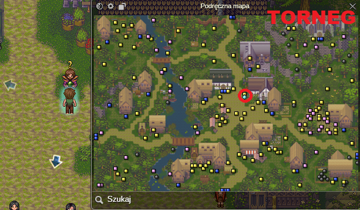
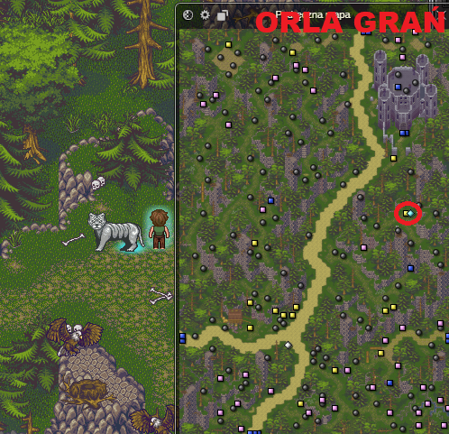
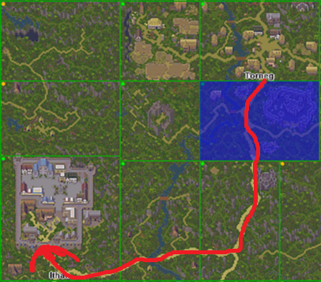
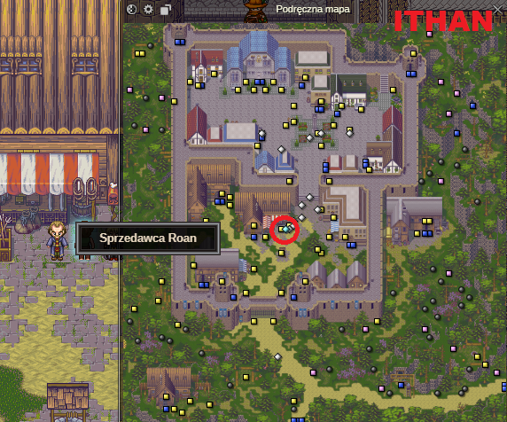
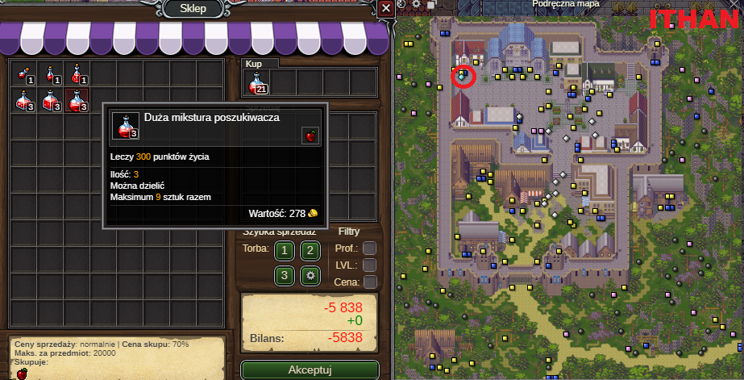
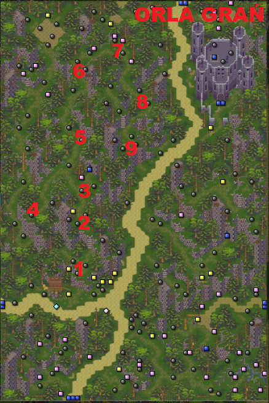

//nowy w margo\\
Witaj w margonem! W tym poradniku dowiesz się wszystkiego czego potrzebujesz, by nabić 100 lvl i zacząć grać na własną rękę!
Margonem to stara gra, jednak z jedynym w swoim rodzaju klimatem, cieszymy się, że chcesz do nas dołączyć!
Na początek zobacz co zrobić po przejściu tutoriala.
1. Udaj się do członka zakonu planu astralnego w Torneg, by uzyskać zgodę na teleportację do swojego pierwszego miasta!

Da Ci on misję na głowę mithrylowej łapy, którą niedługo zdobędziemy.
2. Wyjdź dolnym wyjściem z Torneg do Starych Ruin.
3. Wyjdź dolnym wyjściem ze Starych Ruin do Orlej Grani.
4. Wyjaśnij Mithrylowej Łapie, że tylko ludzie mają prawo rządzić tą krainą.

5. Idź cały czas w górę do Torneg oddać swojego pierwszego questa!
6. Udaj się do Ithan!

7. Udaj się do Sprzedawcy Roana w Ithan!

Oto Sprzedawca Roan. Do 50 poziomu to u głównie u niego będziesz sprzedawał swoje loty. Wyczyść swoje eq z syfu.
8. Udaj się do członka zakonu astralnego w Ithan i wykup zgodę na teleportację.

9. Udaj się do uzdrowicielki Makatary i kup poty na pierwszą wyprawę na exp.

10. Wyjdź z Ithan do Doliny Yss. Następnie powróć do Orlej grani. Dobijemy tutaj 21 lvl.
Staraj się po prostu bić mobki. Zauważ, że potwory w grupie dają dużo więcej expa!
Tutaj masz przykładowo zaznaczone przeze mnie grupki. Po zabiciu ich, wbilem 21 lvl.
